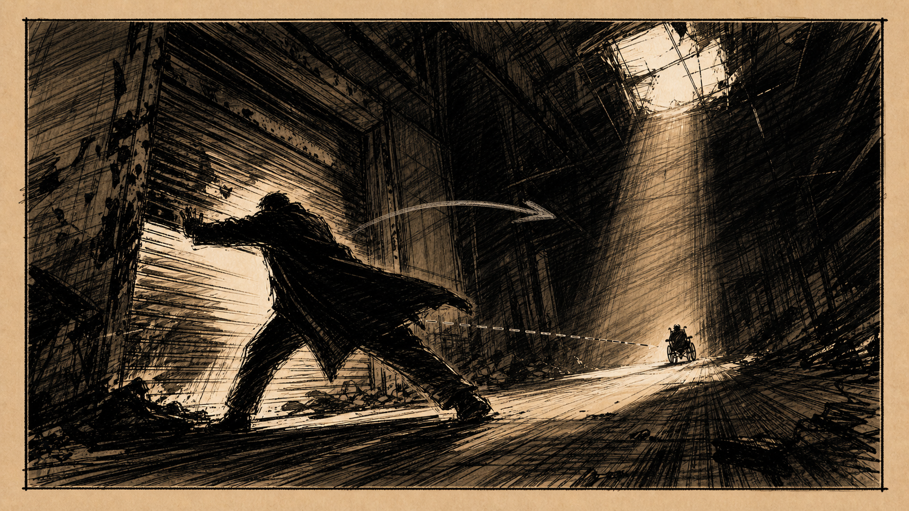
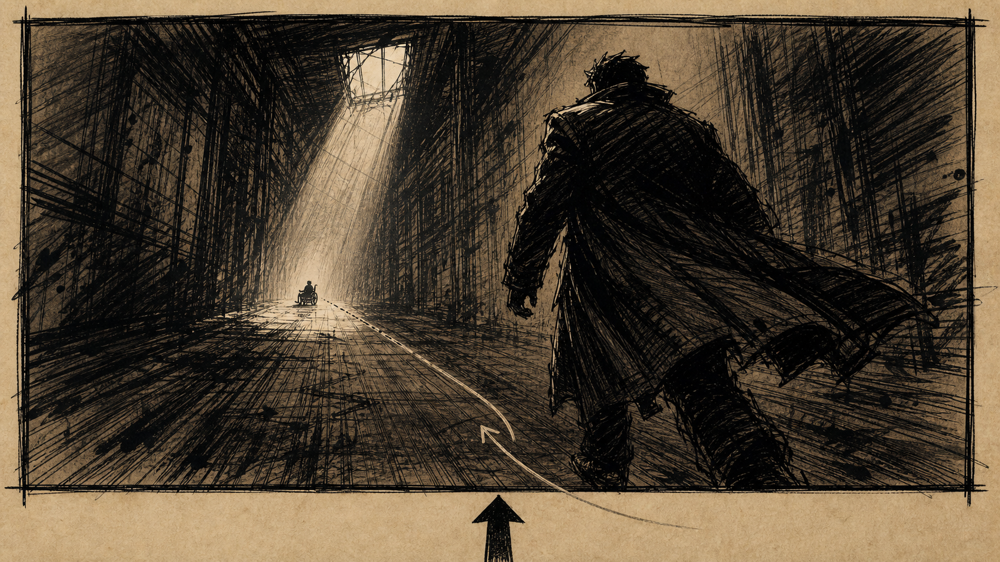
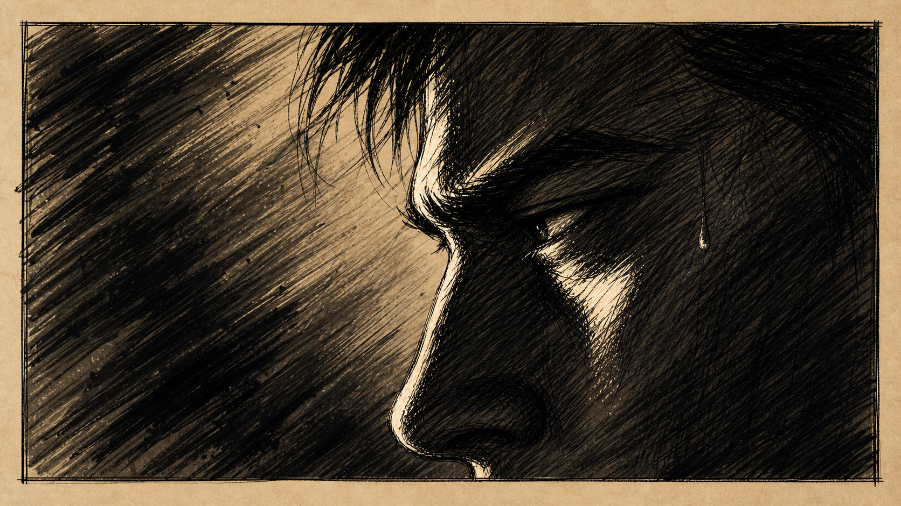
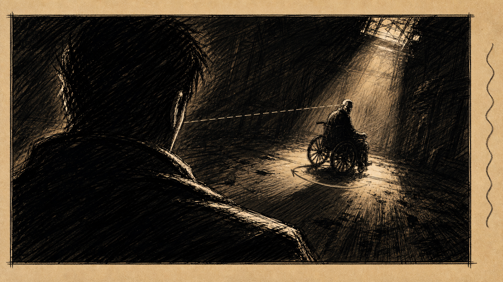
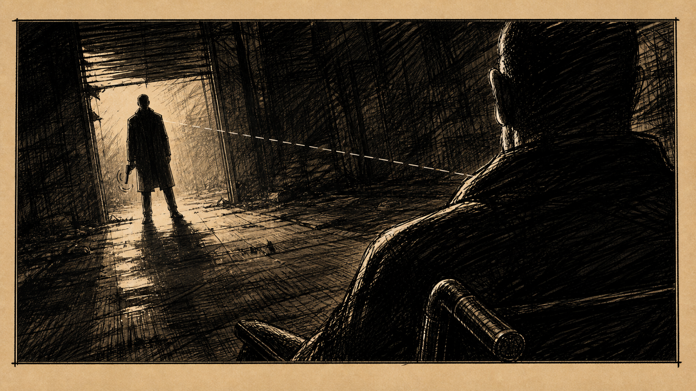
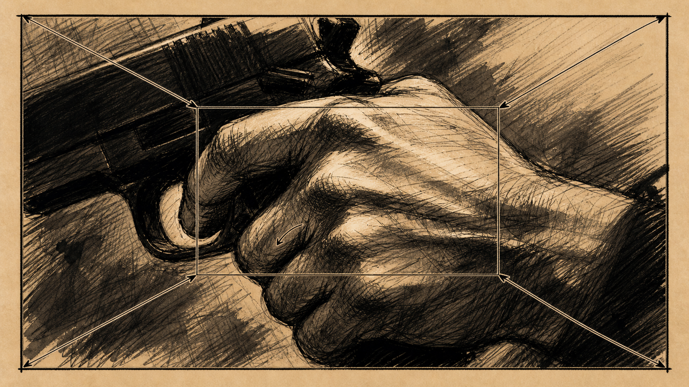

STORYBOARD
仓库对峙 · Scene 12
场景调度图
A · 进入仓库
3 SHOTS · 0:12
01
SH

GENERATED · v1
↻ 重画
SHOTWIDESTATIC
LENS24mm
DUR
0:04
全景。陈默推开锈蚀的卷帘门，铁链与地面摩擦发出长长的金属嘶鸣。逆光中只有他的剪影，月光从破碎天窗倾泻而下，把空旷厂房切成几何光块。
SFX · 卷帘门铁链
SFX · 远处低频嗡鸣
02
SH

GENERATED · v1
SHOTMEDDOLLY IN
LENS35mm
DUR
0:03
中景。镜头从陈默身后跟随，缓慢向前推。他的肩膀逐渐占满画面右侧，左侧露出仓库深处的轮椅轮廓。
SFX · 脚步 玻璃碎裂
03
SH

GENERATED · v1
SHOTCUSTATIC
LENS85mm
DUR
0:05
特写。陈默的眼睛在月光中眯起。瞳孔反射出仓库深处那个轮椅的轮廓。一滴汗从太阳穴滑下。
「我等你很久了。」 — 林（画外）
B · 对峙
3 SHOTS · 0:12
04
SH

GENERATED · v1
SHOTOTSHANDHELD
LENS50mm
DUR
0:04
过肩。从陈默右肩越过，看向仓库深处。轮椅缓慢转过来，但只露出半张脸，另一半隐没在阴影里。
「枪放下。我们好好聊。」 — 林
05
SH

GENERATED · v1
SHOTOTS · REVSTATIC
LENS50mm
DUR
0:03
反打过肩。从林的左肩越过，看向陈默。陈默握枪的手在颤抖，他的眼神在判断。
SFX · 远处汽笛
06
SH

GENERATED · v1
SHOTECUSLOW PUSH
LENS100mm
DUR
0:05
大特写。陈默握枪手指扣在扳机上的瞬间，关节发白。镜头极慢推进。背景虚化，只剩下他指节的纹路。
MUSIC · 弦乐 渐起
SFX · 心跳
— END OF SCENE 12 —